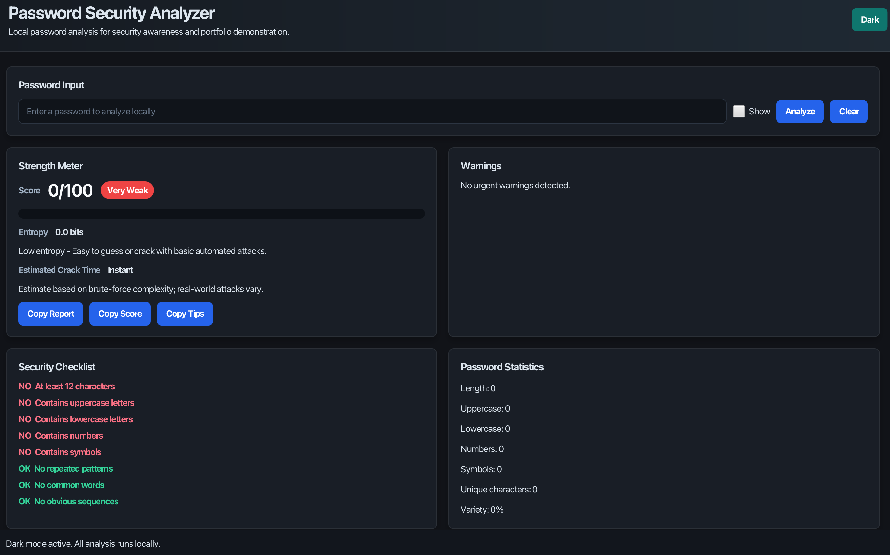
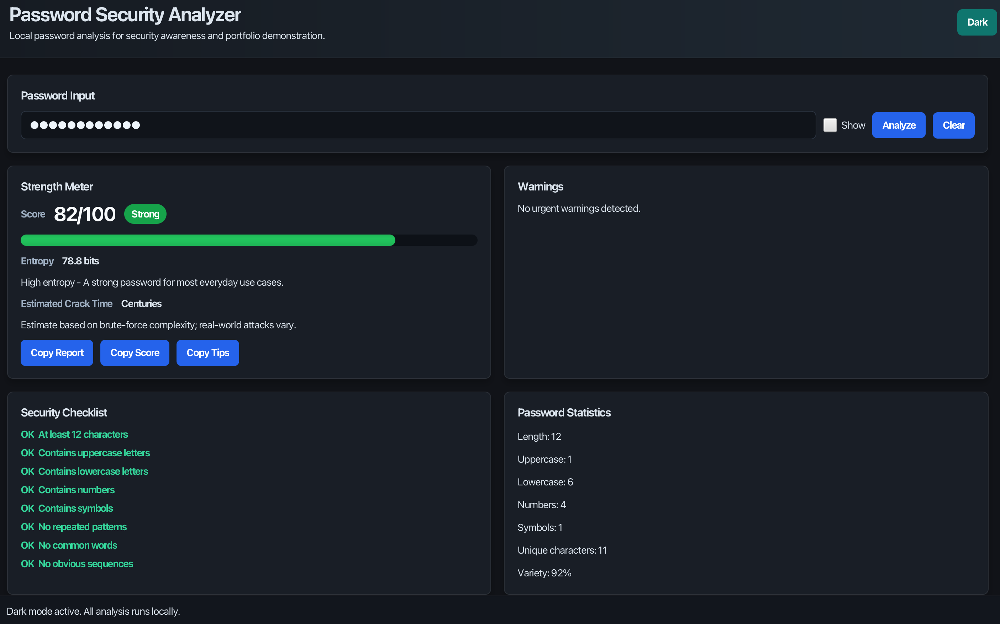
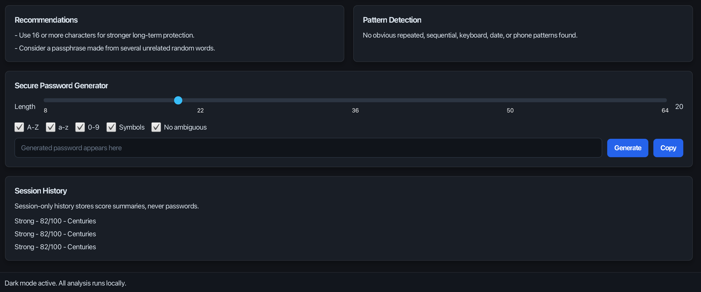
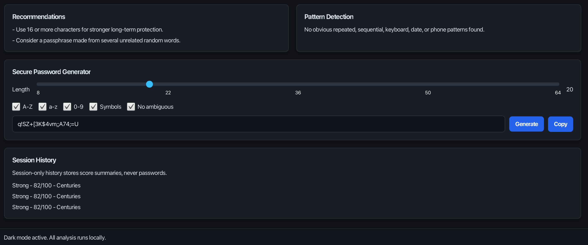

Project Highlights
Local Analysis
Passwords are analyzed on the user's computer and are never saved, logged, or transmitted.
Security Feedback
Strength score, entropy, crack-time estimate, checklist results, warnings, and suggestions.
Pattern Detection
Detects common passwords, repeated chunks, keyboard walks, sequences, dates, and phone-like values.
Password Generator
Creates secure random passwords with configurable length, symbols, numbers, and ambiguity rules.
Screenshots




Run The Desktop App
This is a JavaFX desktop application, so the live GitHub Pages site is a portfolio page. Run the actual app locally with Maven:
git clone https://github.com/Cinthya-Rao/Password-Security-Analyzer.git
cd Password-Security-Analyzer
mvn javafx:runTech Stack
Java 21+
Core application logic and object-oriented architecture.
JavaFX
Desktop user interface with dark and light theme support.
Maven
Dependency management, build, test, and run workflow.
JUnit 5
Focused tests for analyzer and password generator behavior.